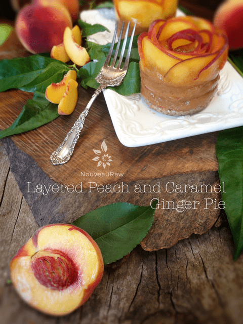
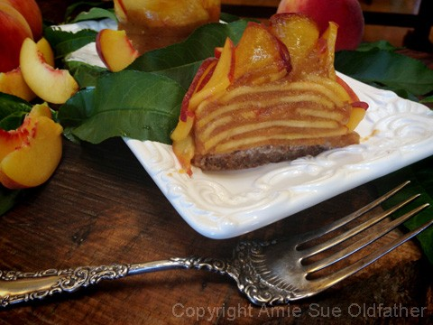
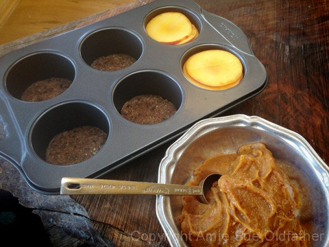
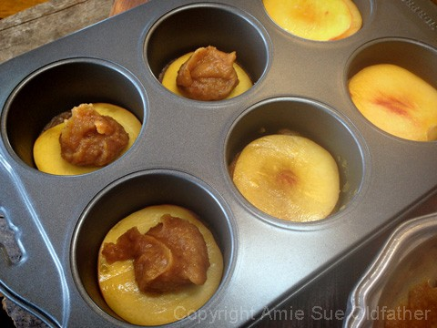
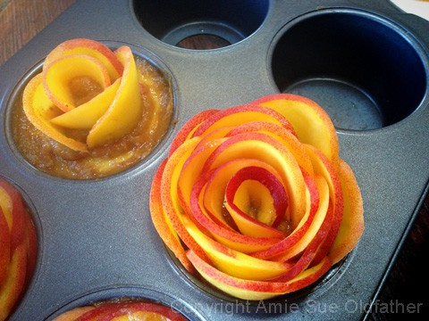
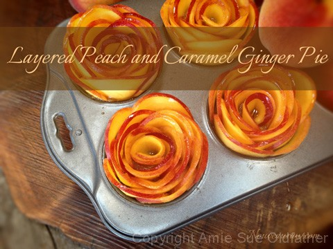

Layered Peach and Caramel Ginger Pie

~ raw, vegan, gluten-free ~
Today’s recipe is all about indulgences! We need them every once in a while, and we all deserve them more often than not. But I don’t know about you, but when it comes to indulgences, it is no fun to feel guilty after partaking in them. That is sort of a spoiler. Not to mention that the guilt will cause stress and negative feelings which in return is detrimental to our precious digestive system.
Stress can decrease nutrient absorption in your gut. It can also reduce enzymatic output in your gut – as much as 20,000-fold! Now shoot fire and save matches, that sort of defeats our whole reasoning for eating raw foods in the first place.
I want you to feel good after you eat this dessert, so let me share with you some of the amazing health properties that are contained in the peach “petals.”
Obviously, the star of the show here is the peach. For starters, they are low in calories. One peach contains only about 35-50 calories and no fat! They are rich in phytochemicals called phenols that act as antioxidants. Peaches contain ten different vitamins and provide over 300 mg of potassium. I had no idea that peaches had potassium. When I used to think of whole foods to eat for a potassium boost, bananas and avocados came to mind, never a peach.
I even read that they can help reduce hair loss due to their positive effect on the scalp. I have been chasing Bob around the house with a peach puree scalp mask, but he outwitted me. Then I learned that peaches are a great source of Vitamin C which is widely used for skincare. Apart from health benefits, you can use peaches directly for skincare on dark circles and wrinkles. I have been chasing Bob around the house with a peach puree facial mask, but he outwitted me, once again! lol
Since I couldn’t catch Bob… I decided to make this dessert with the peaches instead. :) This time, when I rounded the corner, I had the peach dessert in hand so that I wouldn’t spook him. This time he didn’t run! I am picking on Bob here, and it is all in good humor. I do love that man dearly!
These little pies turned out delicious, but you need to know that it is a one, possibly, two-day dessert. Whenever you deal with fresh fruit, the shelf life is always reduced. Mainly because fruit start to release water (juice). This can cause recipes to become mushy. So when you make this dessert, plan on eating it that day or the following.
I used my Norpro Nonstick Small Cheesecake Pan, AKA Layered Peach, and Caramel Ginger Pie Pan. I am betting that you can make this as one large pie instead, but I had a lot of fun creating single-serving pies. If you are not a fan of peaches or you can’t find any ripe ones in your local market, you could always use nectarines, apricots, or even apples.
Before I turn this recipe over to you, I have a confession. Remember how I shared with you that this dessert can get mushy after a few days… well, I know this from experience. I had too many raw sweet treats in the kitchen for Bob to pick between and his tummy just ran out of the room before they could all get eaten… Tragic huh? Are you interested in what I did at this point? If so, click here.
 Ingredients:
Ingredients:
Yields 4
Crust:
- 1 cup raw pecans, soaked & dehydrated
- 1/8 tsp sea salt
- 6 Medjool dates, pitted
- 1 Tbsp raw honey
Caramel ginger sauce:
- 4-6 medium-large peaches, ripe but firm
- 6 large Medjool dates, pitted
- 1 cup diced peaches, see #1 under sauce prep
- 1/2 tsp ground Ceylon cinnamon
- 1/2 tsp ground ginger
- 1/4 cup Irish moss or kelp paste
Decoration:
- 2-4 peaches, sliced 1.5 mm thick
- 1 lemon, juiced and mixed with 2 tbsp water
- maple syrup
Preparation:
Crust:
- Place the Medjool dates in enough hot water to cover them. Set aside.
- This will add more moisture to them, so they blend well into the crust mixture.
- In a food processor, fitted with an “S” blade, combine the pecans and salt. Process until the pecans break down into small crumbles.
- Drain the dates from the soak water (after at least 10 minutes of soaking) and squeeze out the excess water with your hand.
- Spread the dates around the food processor bowl, add the honey, and process until the batter starts to stick together.
- Don’t over process the pecans or they will become oily.
- To make this vegan, replace the honey with another liquid sweetener.
- I used my Norpro Nonstick Small Cheesecake Pan and placed 2 Tbsp of crust batter in the bottom of 4 of the cavities. Press the crust down, nice and evenly. Set aside while you make the filling.
Caramel ginger sauce:
- Wash and dry the peaches. Using a mandolin with the 1.5mm slicing blade, slice two sides of the peach, creating large discs.
- The other small pieces of peach that are left over will be used in the sauce.
- Set the peach discs aside while you make the sauce.
- If the dates are dry, rehydrate them in some warm water, so they blend smoothly.
- This may take as little as 10 minutes.
- Once plump, drain the water and squeeze out the excess water.
- Place in the food processor, fitted with the “S” blade.
- Add the diced peaches (not the round sliced discs), cinnamon, ginger, and kelp paste. Process until thick and creamy.
Assembly:
- Alternate a slice of peach and 1/2 Tbsp of caramel ginger sauce in the cavity of the pan, until you reach the top, stopping about 1/4″ from the rim of the pan.
- Tip: place the caramel ginger sauce in the center of the peach disc, layer another disc on top, and gently press down the top peach disc, so the sauce spreads around underneath it. Don’t press too hard.
- For the top decoration; create 1.5 mm thick discs of peaches (as above) Then cut them in half.
- Juice one lemon and place in a small bowl, along with 2 Tbsp water.
- Dip each peach slice in the lemon water and lay on a paper towel.
- This is to help with discoloration.
- Place a little caramel ginger sauce in the center of the pie, use the smaller slices of peach for the center and use the larger ones are you work your way out to the edges.
- Take one slice and roll it into a circle and place it in the center of the pie.
- This is the center of your peach flower.
- Continue wrapping peach slices around the center, overlapping them, creating petals.
- The moisture of the peaches will help the slices stick to one another.
- Continue this process all the way to the very edge.
- Brush the top of the peaches with maple syrup and place in the fridge for 2 – 4 hours to firm up. This will also allow the flavors to mingle and develop.

I wanted to start the pictures off with the end result so that you had an idea what
we were aiming for. Below is a picture of how it all began. This recipe made 4 of
the layered pies. The 4 to the left of the pan have crusts pressed into them. I used
the other two to hold the peach slices; I was aiming to use peach slices that fit
perfectly in the pan cavities.

As I mentioned above in the directions, alternate a peach slice with about 1/2 Tbsp
of the Ginger Caramel Sauce, until you reach the top. Leave about 1/4″ of space for
the purpose of building the peach flower.

To create the peach flower, place a little caramel ginger sauce in the center of the pie,
use the smaller slices of peach for the center and use the larger ones are you work your
way out to the edges. Take one slice and roll into a circle and place in the center of the pie.
This is the center of your peach flower. Continue wrapping peach slices around the center,
creating petals. The moisture of the peaches will help the slices stick to one another.
Continue this process all the way to the very edge.

Brush the top of the peaches with maple syrup and place in the fridge for at least 2 -4 hours. Serve!

© AmieSue.com